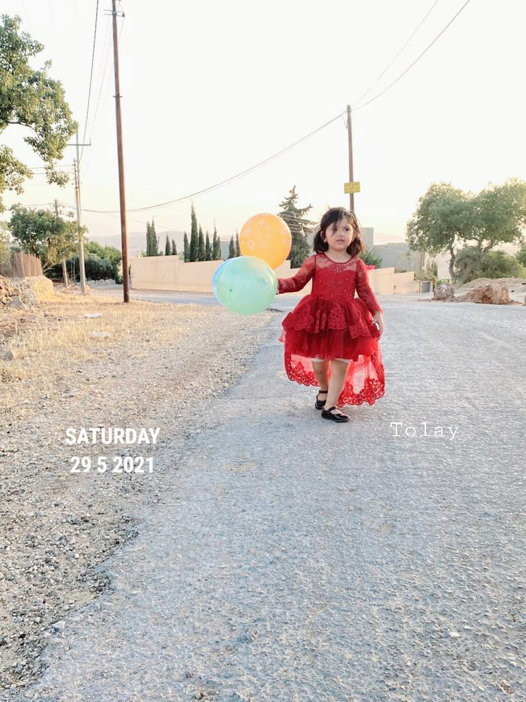
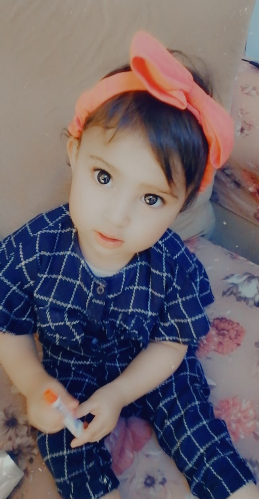

Islam Tweikat is an computer engineer. She has a Master's of Computer Information System and a Bachelor's of computer engineering. she had worked as a customer service teller in Alawneh Exchange. Then had worked as an ICT teacher. Online-Teaching had been her favorite type of teaching so far! Recently, she goes to another field that she love it and have a passion with programming like JavaScript, CSS, HTML, Android. so i want to thank and approciate ASAC'S members to give us this chance! You can find my resume on her LinkedIn page.
she lives in Fuhais-Mahis in Jordan with her husband, Two little girls; Tolay & Wateen!
 - Bachelor's of computer engineering 2014 (University of Jordan)
- Master's of Computer Information System 2019 (University of Jordan)
- Trainee in CSS-Amman : June 2013 - August 2013
- Trainee in NITC-Amman : Sep 2014 - March 2015
- Trainee in MEMR-Amman : April 2015 - Sep 2015
- Teller customer service in Alawneh Exchange : Oct 2015 - May 2019
- Teacher ICT at Tazkeya International Academy-Amman : June 2020- June 2021
- Trainee ASAC in LTUC-Amman : July 2021 - now
TOP TEN Favorite Books
- The Holy Quran.
- The Secret.
- Don't be sad.
- Renew your life.
- The beginning and the end by Ibn Alkatheer
- Riad Al-Salihin
- Stories of the Prophets.
- Men around the prophet Mohammad
- Muhammad: His Life Based on the Earliest Sources by Martin Lings
- Not a Happy Family by Shari Lapena